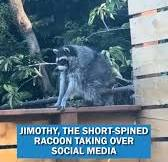

Meet Asha:
- She loves dogs but is fanatic about all animals - especially racoons and oppossums because of their weirdness and human like hands.
- She is stunning, angelic, effervescent, as is her momma, Melba and her whole family honestly.
- She loves an espresso martini after a long day at work (or on a day off).
- She is a social butterfly and always loves to get strange and be herself and it is inspring to witness and contageous to be around.
- She is thoughtful, considerate and kind.
- If someone is mean to me (or any of her besties), she will light them on fire.
- She loves purple and looks beautiful in any jewel tone.
- Her hobbies include traveling the world, meeting new people and enjoying wine (especially from Portugal), and eating new food.
- She is a great spanish speaker and I aspire to speak spanish with her one day.
Asha loves our local celebrity, Jimothy! click below to find the most recent sighting.
